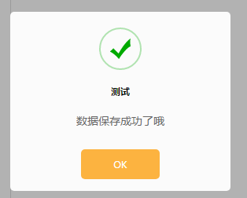

owner.js简介
1.每秒60帧函数requestAnimationFrame
2.显示loading动画
3.懒加载可用的base64图片
4.隐藏Loading动画
5.显示遮罩层
6.隐藏遮罩层
7.自动消失的消息提示
8.显示成功提示的弹窗
1.每秒60帧函数requestAnimationFrame
requestAnimationFrame是浏览器用于定时循环操作的一个接口，类似于setTimeout，主要用途是按帧对网页进行重绘
//示例
function test(){
requestAnimationFrame(test);
};
requestAnimationFrame(test);
2.显示loading动画 showLoading
showLoading挂载在nativeCacheObj原型上,可选参数canClick，默认为false
canClick：true表示显示loading动画的时候，页面还可触发点击事件
canClick：fale相反
//示例
nativeCacheObj.showLoading(true);
3.懒加载可用的base64图片lazyImgBase
lazyImgBase挂载在nativeCacheObj原型上
//示例
var img=nativeCacheObj.lazyImgBase;
4.隐藏loading动画hideLoading
hideLoading挂载在nativeCacheObj原型上
//示例
nativeCacheObj.hideLoading();
5.显示遮罩层showMask
showMask挂载在nativeCacheObj原型上,可选参数callBack表示点击遮罩层的回调函数
//示例
nativeCacheObj.showMask(function(){
//do something....
});
6.隐藏遮罩层hideMask
hideMask挂载在nativeCacheObj原型上
//示例
nativeCacheObj.hideMask();
7.自动消失的消息提示showTextMessagebox
showTextMessagebox(msg,delayTime)挂载在nativeCacheObj原型上,必传参数msg表示要显示的消息内容，可选参数delayTime表示经过多少秒之后提示内容消失,默认是800ms
//示例
nativeCacheObj.showTextMessagebox("亲，参数有误哦"，1500);
8.显示成功提示的弹窗showSuccessPopup
showSuccessPopup(option)挂载在nativeCacheObj原型上,必传参数option,类型为Object,字段有Title表示弹窗的标题，Content表示弹窗的正文,Callback表示点击确定后的回调，类型必须为Function
//示例
nativeCacheObj.showSuccessPopup({
Title:"测试",
Content:"数据保存成功了哦",
Callback:function(){
//do something....
}
});
